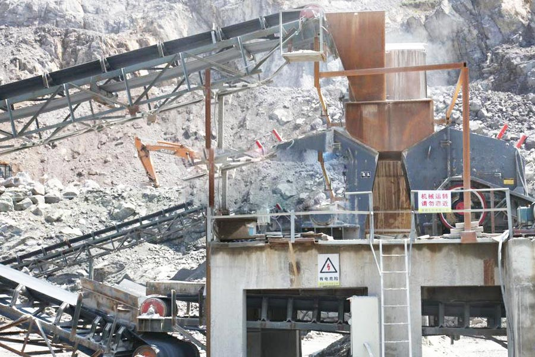

Construction waste crushing production line

Mobile construction waste crushing station for urban construction waste crushing.
Barite Ore Crushing Plant
Barite Ore Crushing Plant. Crushing equipment barite, barite crusher equipment prices, barite crusher equipment manufacturers, CAG Mining Machinery Co., Ltd. is a professional manufacturer of barite crusher equipment, providing a variety of barite crusher equipment.
Barite mill, grinder barite, barite processing equipment, barite can be used as a white pigment (lithopone we called), it can also be used in chemical, paper, textile packing it in glass production It can act as a flux and increase the brightness of the glass.

Barite Application
Barite is important in the manufacture of paper, glass, rubber. A rich, white pigment is made from crushed Barite. Barite is also used in radiology for x-rays of the digestive system. When crushed, it is added to mud to form barium mud, which is poured into oil wells during drilling. Barite is a very popular mineral among mineral collectors and fine specimens are greatly sought after.
Barite crushing impact crusher considerable operating advantages, as a professional crusher equipment, impact crusher equipment barite ore market is a very common device, in all types of construction projects, there is no barite impact crusher help.
Barite milling & Grinding plants (Barite processing plants)
China barite mining crusher for sale. The barite is the raw material to withdraw the barium, grinds into the fine powder can be use as magcobar when drilling, makes into the fragment can be use as the materials of the anti-radiation gravity wall to replace the original material gravel. CAG company is the professional manufacturer of the crusher machine and grinding machine. Our key product: Raymond mill, Vertical roller mill, MSB coarse powder mill, SCM series super-micro mill is suitable for the barite grinding. We have many success cases about it, Contact us and we will give you further instructions.Barite is kind of non-metallic mineral products which take the barium sulfate (BaSO4) as the main component. Pure barite is colorless and transparent, while generally the mineral rocks are white, light yellow with glass gloss. Barite can be used as white pigments (commonly known as lithopone). Also the barite can be used in chemical, paper making, textile filler. In glass production it can act as a flux and increase the brightness of glass. The most important application for the barite rocks is as a weighting agent used in drilling and refining industry to refine barium.
For barite quarry or mining, it’s important to design and choose suitable barite crushing plant including barite crusher and barite grinding machine. When choosing the right barite crusher, you should consider the reduction ratio according to the requirement of the barite crushing system. If you need big reduction ratio, it’s better to choose hammer crusher and impact crusher. The reduction ratio of these barite crushers are generally 10~35.
After primary crush by the barite crushers, you can install barite grinding machine which is decided according to the final particle size requirement. For barite further grinding, there are ball mill, coal mill, Raymond mill, coarse powder grinding mill, etc.
Barite, barite beneficiation process, crushing barite, barite is the most common mineral of barium, which is a component of barium sulfate. Produced in epithermal veins, such as quartz - barite veins, fluorite - barite veins, etc., often with galena, sphalerite, chalcopyrite, cinnabar and other symbiotic.
China barite mining crusher supplier. Barite beneficiation technology and manufacturing processes, barite processing flow 1, barite ore crushing process brittle fragile, so the crushing process, we recommend the use of jaw crusher, avoid the use of counter-cracked hammer crusher barite produce large amounts of iron ore fines.
Leave Me A Message, Now
If you have any questions regarding equipment prices, production line configuration or other problems, you can send a message to us, we will contact you soon.